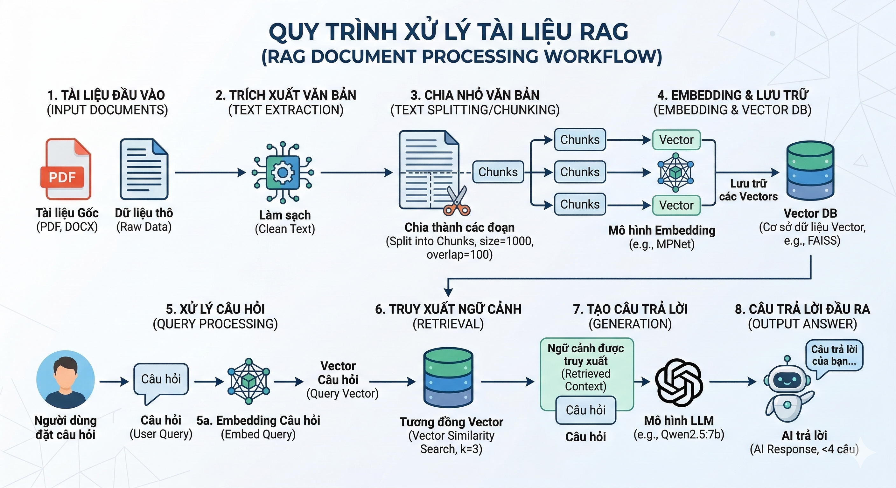
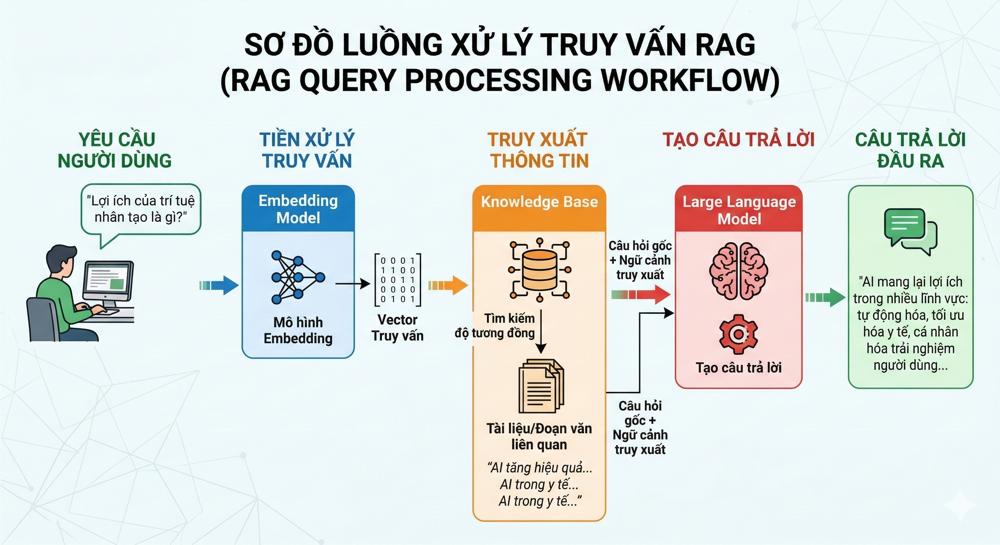

Portfolio
AI & Machine Learning Projects
RAG System - Chat with PDF Documents
Upload PDF files and ask questions — AI will answer based on document content! The Retrieval-Augmented Generation (RAG) system uses Qwen2.5:7b LLM running locally via Ollama, combined with FAISS vector database for context search and LangChain to generate intelligent answers. Modern Streamlit interface with automatic Vietnamese-English bilingual support.
Key Features & Architecture:

Document Processing: PDFPlumber extracts text, chunks into 1000-character segments with 100-char overlap, generates 768-dimensional embeddings using MPNet multilingual model, stores in FAISS for similarity search (retrieves top-3 relevant chunks per query).

Query Pipeline: Automatic Vietnamese/English detection → Custom prompt engineering → Vector retrieval → Qwen2.5:7b (7B parameters) generates contextual answers → No API costs, complete privacy with local LLM.
Technologies & Requirements:
System Requirements: Python 3.8+ | RAM 8GB+ (16GB recommended) | ~10GB storage for Qwen2.5:7b model | Ollama installed
Technical Component Details:
Python 3.8+ & Streamlit
Python is the core programming language for ML/AI with a rich ecosystem (NumPy, Pandas). Streamlit 1.41.1 provides a web framework to build interactive UI with pure Python - no need for HTML/CSS/JS. Session state management for chat history, file upload widget for PDF, and real-time streaming response from LLM.
LangChain 0.3.16
Orchestration framework for LLM applications. Uses OllamaLLM wrapper to integrate Qwen2.5, RecursiveCharacterTextSplitter for intelligent chunking (respecting paragraph/sentence boundaries), RetrievalQA chain combining retriever + LLM, and PromptTemplate for context injection + instruction engineering.
FAISS (Facebook AI Similarity Search)
Optimized vector database for similarity search with IndexFlatL2 (exact L2 distance). Stores 768-dim embeddings, search algorithm returns top-k most similar vectors in O(n) time. Serialization support for persistent storage (save/load vector index). Efficiently handles millions of vectors.
Ollama + Qwen2.5:7b
Ollama is a local LLM runtime (like Docker for AI models) - easily download, run, and manage models. Qwen2.5:7b (Alibaba Cloud) has 7 billion parameters, supports multilingual (Vi/En), 32K token context window, instruction-tuned for chat/QA, and runs completely offline - zero API costs, complete data privacy.
HuggingFace + Sentence-Transformers
HuggingFace provides a model hub with thousands of pretrained models. Sentence-Transformers library creates semantic embeddings - uses paraphrase-multilingual-mpnet-base-v2 model (50+ languages, 768 dimensions) to convert text into dense vectors. Cosine similarity between vectors measures semantic meaning equivalence.
PDFPlumber
Python library to extract text from PDF files with high accuracy. Parses PDF structure (text, tables, metadata), handles complex layouts, preserves formatting, and handles multi-page documents. Alternative to PyPDF2/pdfminer with simpler API and better text extraction quality.
Why This Tech Stack?
100% Local & Private: Ollama + Qwen2.5 = zero cloud dependency, no data sent to external APIs (GDPR compliant). Production-Ready: FAISS scales to millions of vectors, LangChain has robust error handling. Multilingual: MPNet embeddings + Qwen2.5 support Vietnamese and English natively. Cost-Effective: One-time setup, zero API fees, run unlimited queries.